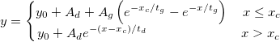
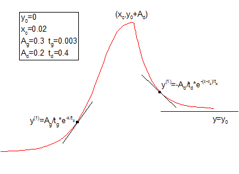

ExpGrowDec-FitFunc

1次増加と1次減少の位相の指数関数

数：6
名前: y0, xc, Ag, tg, Ad, td
意味：y0 = オフセット, xc = 中心, Ag = 増加振幅, tg = 増加時間定数, Ad = 減少振幅, td = 減少時間定数
下側境界:0 < xc, Ag, tg, Ad, td
上側境界: なし
nlf_ExpGrowDec(x,y0,xc,Ag,tg,Ad,td)
fitfunc\ExpGrowDec.fdf
Exponential